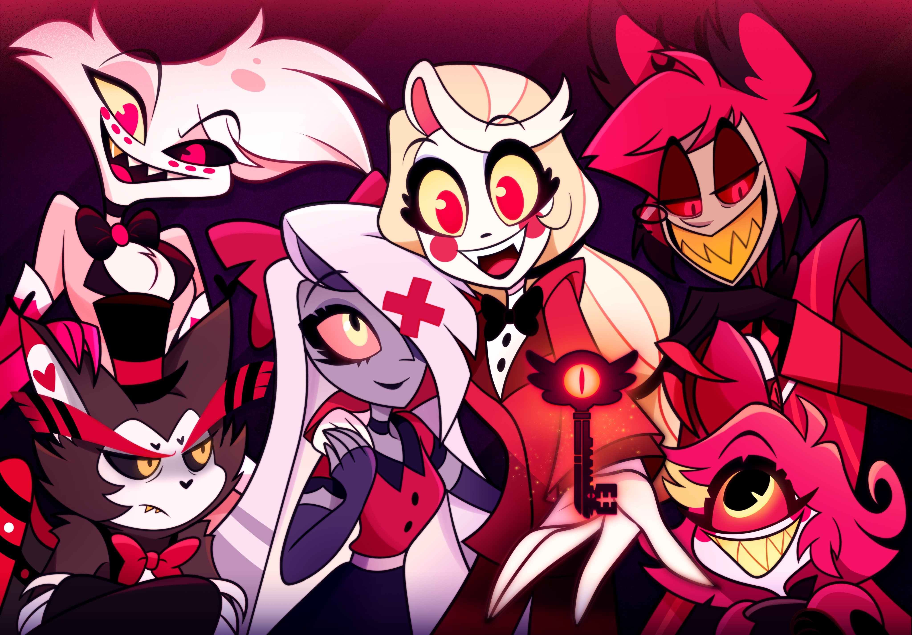
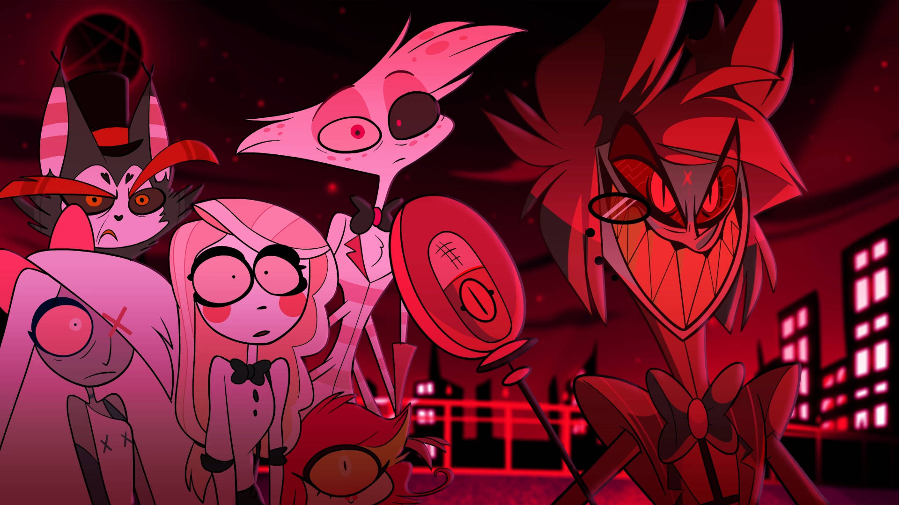
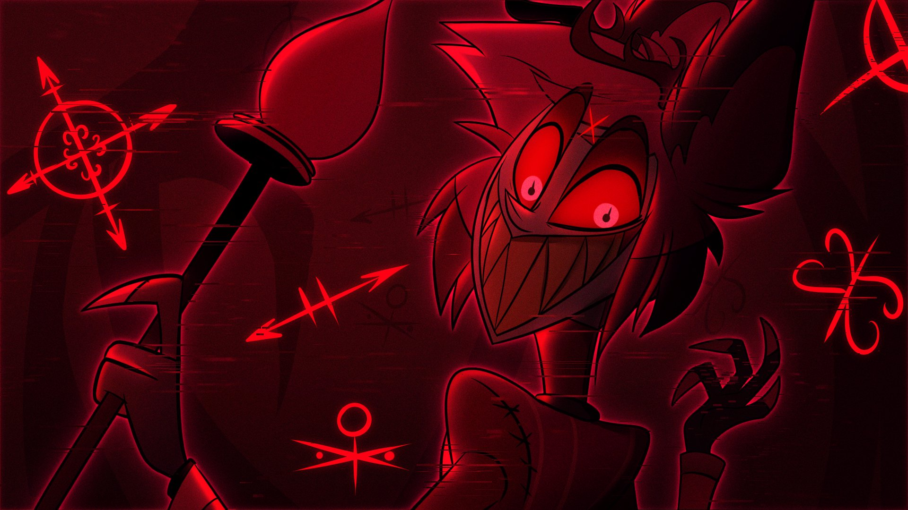
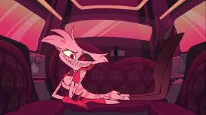
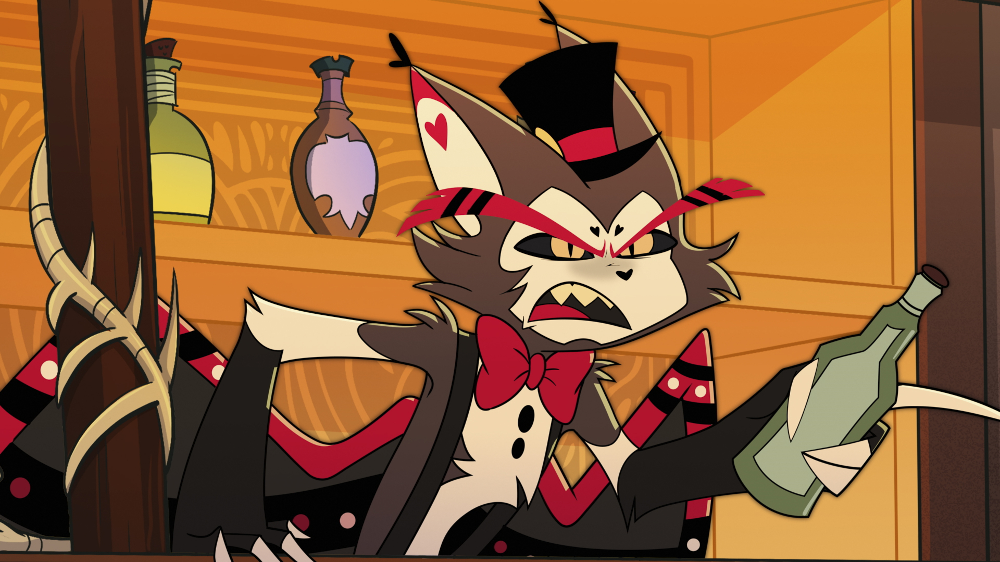
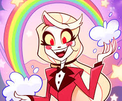
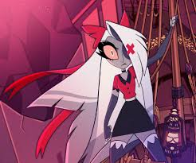
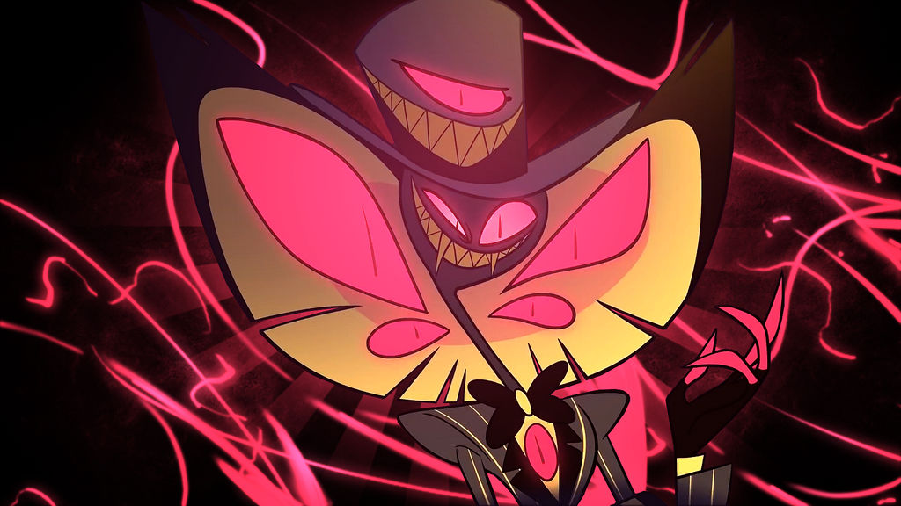

O que é hazbin hotel?
Esta série musical animada para adultos segue Charlie, a princesa do Inferno, enquanto ela persegue seu objetivo aparentemente impossível de reabilitar demônios para reduzir pacificamente a superpopulação em seu reino. Depois de um extermínio anual imposto pelo Céu, ela abre um hotel na esperança de que os clientes façam o “check-out” depois de provarem que suas almas podem ser resgatadas.
Por que assistir?
Na tentativa de encontrar uma alternativa não violenta para reduzir a superpopulação do Inferno, a filha de Lúcifer abre um hotel de reabilitação que oferece a um grupo de demônios desajustados uma chance de redenção. como não querer assistir tal obra?
Personagens Principais
-
Alastor
O demônio do rádio comandou bastante no inferno, mas perdeu uma luta aí e ninguém sabe por que ele passou 7 anos longe.
-
Angel Dust
Em resumo, Drogas e um passado e presente trabalhando pra um lunatico, traumatizado.
-
Husk
Já foi um dos poderosos mas perdeu a alma apostando, agora vive na coleira (Bartender).
-
Saul Goodman
A moça é fia do lucifer e quer que inves dos demonios ter que morrer no extermínio possa ir para o céu se melhorar.
-
Vaggie
Muie da charlie.
-
Serpentius
A cobra que era vilão e virou pro bem (Ele morre).